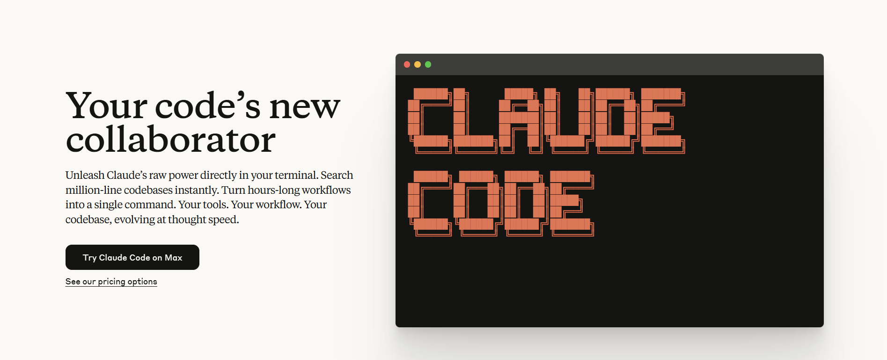
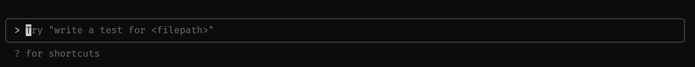
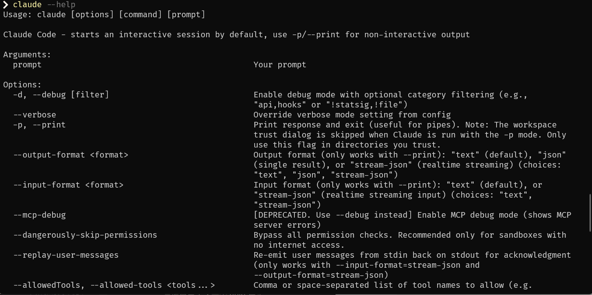
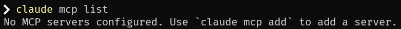
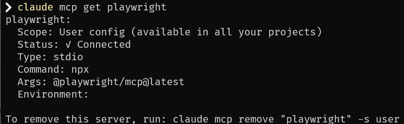
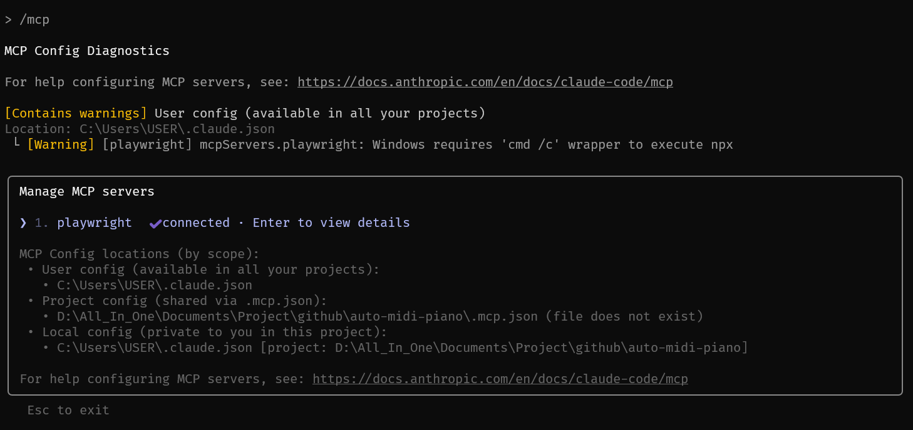
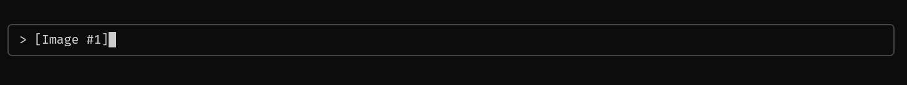
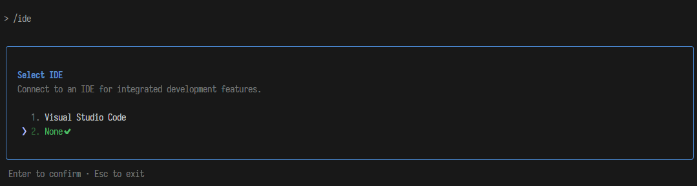
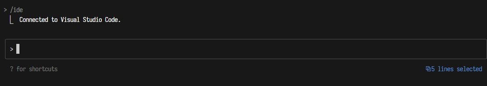

Claude Code 是由 Anthropic 在 2024 年 12 月發布的一款 AI Coding Agent 工具，目的幫助開發者在終端機中將想法更快地轉化為程式碼，可以搜尋和讀取程式碼、編輯檔案、編寫和執行測試、提交並推送程式碼到 GitHub，以及使用命令列工具等操作。
如何使用
初次安裝
初次使用前需要先安裝 Claude Code
npm install -g @anthropic-ai/claude-code
claude --version更多相關安裝方法，請參考：Anthropic Quickstart - Anthropic
基礎指令
使用 Claude Code，最基礎有兩種方式，一種是互動模式也就是多輪對話的互動介面；另一個則是一次性詢問的方式，只執行一次互動操作。還有其他像是 pipeline 等方式也可以與 Claude Code 互動。
-
啟動互動模式
於終端機輸入
claude，按下 Enter 即可進入對話模式。輸入/exit或/quit可退出互動模式。
claude -
一次性詢問
不想進入互動模式？直接在命令列輸入
claude "你的問題"，即可取得即時回答，例如"這段代碼有什麼問題？"或"幫我寫個快速排序"。claude "tell me what this project is doing"互動完成後會停留在互動模式，可以繼續使用 Claude Code。
-
管道處理（Pipe）
可以把文件或輸出的結果透過管道傳入
claude，比如：cat main.py | claude "optimize this code" cat README.md | claude "translate into chinese" git diff | claude "explain this change"可以直接分析內容、優化或翻譯，省時省力。
-
純文字輸出
預設輸出為 Markdown 格式，加上
-p後就會輸出純文字並直接退出，例如：claude -p "generate mysql json statement example" > query.sql非互動、純結果導出。
-
查看幫助
忘記指令？輸入
claude --help，即可查看全部命令說明。
若想要退出 直接使用 /exit,
/quit 就可以了。
配置管理
若希望更客製化的配置資訊，Claude Code 提供大量的方法可以根據個人要求進行相應配置。
-
查看目前配置
可查看當前使用的模型、API 金鑰等資訊。
claude config list -
查看特定設定值
claude config get <key>查詢某一個設定的當前值。
-
修改設定值
claude config set <key> <value>將某一個設定更新為新值。
-
對「列表型設定」新增項目
claude config add <key> <value>在清單型設定中加入一個新項。
-
對「列表型設定」移除項目
claude config remove <key> <value>從清單型設定中刪除指定項目。
更多配置管理可以參考：Anthropic Claude Code settings - Anthropic
工具管理（MCP）
Claude Code 本身也完全支援 MCP 來連結外部工具，擴展自身能力：
-
列出所有已安裝的 MCP
claude mcp list -
查看某個 MCP 的詳細設定
claude mcp get playwright -
安裝常用 MCP，如下所示：
-
安裝 Playwright：
claude mcp add playwright -s user -- npx @playwright/mcp@latest -
安裝 Sequential Thinking：
claude mcp add sequential-thinking -s user -- npx -y @modelcontextprotocol/server-sequential-thinking -
安裝 Puppeteer：
claude mcp add puppeteer -s user -- npx -y @modelcontextprotocol/server-puppeteer -
安裝 Context7：
claude mcp add context7 -- npx @upstash/context7-mcp
-
安裝 Playwright：
-
移除 MCP
claude mcp remove "playwright" -s user -
檢視 MCP 狀態（互動模式下）
進入
claude後使用，即可查看目前所有 MCP 狀態：
/mcp
除此之外還可以使用 .mcp.json 設定
{
"mcpServers": {
"playwright": {
"args": ["@playwright/mcp@latest", "--headless"],
"command": "npx"
},
"context7": {
"args": ["-y", "@upstash/context7-mcp@latest"],
"command": "npx"
}
}
}更多可以參考：Anthropic Connect Claude Code to tools via MCP - Anthropic
進階操作
在
claude
的互動模式中，除了輸入問題，也能使用以下命令加速流程：
壓縮對話上下文
有時因為使用的狀況會導致上下文過長，此時可以選擇清除多餘歷史，只保留摘要在上下文中。
/compact <optional custom summarization instructions> # Clear conversation history but keep a summary in context. Optional: /compact [instructions for summarization]清除會話歷史
又或是可以完全重置會話，釋放上下文空間。
/clear (reset) # Clear conversation history and free up context接續上次的對話
還可恢復之前的對話狀態繼續使用。
/resume # Resume a conversation記憶模式 (項目級別/全域級別)
輸入 # 可進入 記憶編輯模式，用來修改
CLAUDE.md：
- 專案級：
./CLAUDE.md - 全域級：
~/.claude/CLAUDE.md
#讀圖片
- 拖曳圖片到終端：可以直接將圖片檔案拖拽到正在執行 Claude Code 的終端視窗中。Claude 將能夠「看到」並分析這個圖片。 
-
複製貼上圖片（macOS）：在 macOS 上，可以使用
Control+V（不是Command+V）將其貼上到 Claude Code 中。
回撤操作
有時會希望 Claude Code 回撤此前的操作，除了可以使用
esc 或是直接告訴 Claude Code 以外，還可以參考下面
ccundo 來進行回撤。
實際上 Claude Code 會把相關歷史紀錄都儲存在
C:\Users\USER\.claude\projects\
（Windows）下的相關專案紀錄中。
IDE 整合
若想整合其他 IDE，則可以使用 /ide 這樣一來就可以與其整合。
像是若與 VSCode 整合，假設選取一段程式碼，Claude Code 是可以知道你所選取的程式碼區段內容。
hook
Claude Code hooks 是使用者定義的 shell 命令，在 Claude Code 生命週期的各個時點執行。Hooks 提供對 Claude Code 行為的確定性控制，確保某些動作的觸發，而不是依賴 LLM 選擇執行。
舉例以下幾個場景：
- 通知：自訂當 Claude Code 等待您的輸入或執行權限時如何通知您。
- 自動格式化：在每次檔案編輯後對 .ts 檔案執行 prettier，對 .go 檔案執行 gofmt 等。
- 記錄：追蹤和計算所有執行的命令以符合合規性或除錯需求。
- 回饋：當 Claude Code 產生不符合您程式碼庫慣例的程式碼時提供自動回饋。
- 自訂權限：阻止對生產檔案或敏感目錄的修改。
更多可以參考：Anthropic Hooks reference - Anthropic
子代理（Subagent）
Claude Code 中的自定義子代理是專門的 AI 助手，可以被調用來處理特定類型的任務。
- 具有自定義系統提示（system prompt）
- 工具和獨立上下文窗口（context windows）的特定任務配置
- 可重用性
- 彈性的權限管理
更多可以參考：Anthropic Subagents - Anthropic
常見問題
連接問題
# test api/network connection
claude "test connection"
# check config
claude config get api-key
claude config get model性能優化
# enable cache
claude config set cache-enabled true
# set max-concurrent
claude config set max-concurrent 3
# adujst timeout
claude config set timeout 30調試模式
# enable verbose mode
claude --verbose "question"
# debug
claude --debug "debug command"最佳實踐
初始化配置
創建 CLAUDE.md
CLAUDE.md 是 Claude Code 中的重要配置文件，用來定義
Claude Code 的行為與上下文資訊，會被自動讀取到上下文中。
通常包含以下資訊：
- 項目概述
- 開發環境設置
- 代碼庫結構
- 使用指南
- 開發工作流程
- 限制和注意事項
創建的方式可以使用 /init 命令，或是手動建立：
/init
Claude Code 讀取
CLAUDE.md 設定檔的優先順序和搜尋路徑：
-
專案根目錄：
./CLAUDE.md（推薦使用，可提交至 git，團隊成員共享相同的配置） -
專案本地：
./CLAUDE.local.md（不須提交到 git，通常添加到 .gitignore，用於個人開發環境的特殊設置） -
全域設定：
~/.claude/CLAUDE.md（適用於所有沒有專案特定配置的情況）
父目錄和子目錄中也會被自動讀取。
配置工具權限
Claude Code 中也需要進行權限的控管，避免非預期行為的發生。透過以下方式進行權限設定：
- 使用
/permissions命令 - 手動編輯
.claude/settings.json - 啟用
--allowedTools參數 - 使用
--dangerously-skip-permissions
MCP 工具
Claude Code 可透過三種方式連接任意數量的 MCP 伺服器：
- 專案配置中（在該目錄執行 Claude Code 時可用）
- 全域設定中（所有項目可用）
- 提交到 .mcp.json 檔案（任何在你程式碼庫工作的成員都可用）。例如，你可以在 .mcp.json 新增 Puppeteer 和 Sentry 伺服器，方便每位工程師開箱即用。
- 用 MCP 時，建議用 --mcp-debug 標誌來幫助排查設定問題。
上下文管理
若希望更好的使用上下文，可以參考以下用法：
- 使用
@引用文件 - 任務切換時使用
/clear清空上次任務訊息 - 長時間會話使用
/compact定期壓縮上下文 -
將重要資訊透過
#（memory 功能） 記錄到CLAUDE.md中 -
使用
/resume恢復歷史會話；也可以啟動時恢復，指令為claude --continue。
自定義命令
對於重複性高的工作流（例如：日誌分析），可以在
.claude/commands 目錄下創建自定義的命令，是 Claude
Code 支援的
專案級自定義 Slash Commands 儲存位置。你可以透過
Markdown 檔案定義常用 prompt 指令，可以用於 Claude Code 中。
---
allowed-tools: Bash(git add:*), Bash(git status:*), Bash(git commit:*)
description: Create a git commit
---
## Context
- Current git status: !`git status`
- Current git diff (staged and unstaged changes): !`git diff HEAD`
- Current branch: !`git branch --show-current`
- Recent commits: !`git log --oneline -10`
## Your task
Based on the above changes, create a single git commit.更多參考：Anthropic Slash commands - Anthropic
Claude Code 的最大優勢在於其靈活性和終端原生體驗，不會綁定你到特定的 IDE，而是作為一個 CLI 工具，可以與任何現有的 IDE 配合使用。相比 Cursor、Windsurf 等 AI 編程工具需要完全切換到新的 IDE 環境或學習全新界面，Claude Code 讓開發者能保持原有的工作流程，同時在熟悉的終端環境中獲得 AI 協助。
小技巧
更換 LLM Provider
有時你可能想要切換 Claude Code 預設的 API Provider（例如切換到自建 Proxy 服務）。這可以透過環境變數完成：
ANTHROPIC_AUTH_TOKEN = "sk-..."
ANTHROPIC_BASE_URL = "..."參考：musistudio/claude-code-router
具體說明需求
把需求說清楚、說具體，避免「修一下 bug」這種籠統指令；具體到模組/錯誤型態/期望行為，回應品質更高。
把複雜的需求分步執行
大任務拆小步：先接口、再驗證、再測試… 每一步完成就 review/測試，再進下一步，能避開上下文過長與輸出截斷。
先理解專案程式碼再操作
在動手改前，先讓 Claude 掃描與解讀系統設計、資料表、錯誤處理流等，再提出修改要求，成功率更高。
多使用快捷鍵
/檢視所有斜線命令- ↑/↓ 瀏覽歷史、Tab 自動補全
- Option+Enter（macOS）換行、Ctrl+C 離開
這些能大幅提速日常操作。
使用免授權模式
長流程常被「要求授權」打斷時，可用：
claude --dangerously-skip-permissions建議在離線容器中使用，降低風險。
啟發思考模式
若在對話中可以使用以下詞啟發 Claude Code 進行深度思考：
think
think hard
think harder
ultrathink若發現錯誤，及時打斷
若發現提示指令下錯，或是
Claude Code 執行過程不如預期，可以使用
esc 及時打斷，以免造成後續麻煩。
發送圖片
可貼圖片讓 Claude Code 讀圖說明錯誤/按設計稿還原 UI 等。
恢復歷史對話
非互動模式：
claude --continue
claude --resume互動模式：
- 輸入
/resume從清單選擇會話繼續。
記憶管理
記憶檔位置與用途：
- 專案共享：
./CLAUDE.md（規範/工作流/風格等） - 使用者全域：
~/.claude/CLAUDE.md（個人偏好） - 本地專案偏好：
./CLAUDE.local.md
互動中用 /memory 打開並編輯記憶檔。
啟動時會自動遞迴載入路徑上的 CLAUDE.md。
編輯記憶檔案
在
/memory 清單中選目標檔（如
~/.claude/CLAUDE.md），加入如「請用繁體中文回答」等個人規則，即可長期生效。
Git 交互
用自然語言驅動 Git：
- 「我修改了哪些文件」→ 顯示變更
- 「用合理描述性信息提交我的更改」→ 產生提交訊息並提交
- 「推送本分支到遠端 / 建立 feature 分支 / 顯示最近 3 次提交檔案」等皆可直說。
Linux 交互
互動模式或一次性
-p 皆可讓 Claude 生成並執行複雜 Shell
指令（如列出行數最多的前 3 個 .java 檔）。
查看消耗狀況
/cost檢視當前會話花費。- ryoppippi/ccusage
必要時上下文壓縮
/compact
清除對話歷史但保留摘要，降低 token 與上下文長度；也可在
/config 控制自動壓縮（接近 95% 容量時會自動觸發）。
自定義快捷指令
位置：
- User level：
~/.claude/commands/（所有專案可用，前綴/user:） - Project level：
./.claude/commands/（僅當前專案，前綴/project:）
進入 Bash 模式
在命令前加
!，即可進入 Bash 模式，由系統直接執行。
自動接受編輯、使用計畫模式
按下 Shift + Tab 切換「auto‑accept
edits」模式。開啟後，Claude Code
會自動創建及編輯檔案，省去逐次確認。比
--dangerously-skip-permissions
更安全，作用範圍也僅限編輯操作。
同樣使用 Shift + Tab 切換「plan
mode」。開啟後，Claude Code
會生成功能規劃，並詢問是否執行。如果選擇「Yes, and auto-accept
edits」，它將自動切換到自動接受編輯模式，依計畫完成所有工作。
若遇到問題可以看看這個 Issues：anthropics/claude-code/issues/3368
使用 MCP 提升效率
Claude Code 支援 MCP 協議，可加入多種服務器工具（如 browser 自動化、最新文件查詢等）。
管理 MCP：
claude mcp list
claude mcp get <name>
claude mcp remove <name>使用 /mcp 指令查看相關資訊。
快速跳轉前訊息
連按兩次
Esc 可跳出訊息歷史視窗，選擇 msg
後可返回並重新編輯該 prompt。有效避免重打指令。
還原程式碼版本
輸入 rollback 即可回退到先前
checkpoint，若想取消回退，再輸入
undo 即可復原。類似 Cursor 的 checkpoint
功能，十分便利。但務必仍使用 Git 控制版本，保護資料。
更新版本保持最新功能
npm install -g @anthropic-ai/claude-code
claude --versionClaude Code 的最大優勢在於其靈活性和終端原生體驗，不會綁定你到特定的 IDE，而是作為一個 CLI 工具，可以與任何現有的 IDE 配合使用。相比 Cursor、Windsurf 等 AI 編程工具需要完全切換到新的 IDE 環境或學習全新界面，Claude Code 讓開發者能保持原有的工作流程，同時在熟悉的終端環境中獲得 AI 協助。反映並體現了現代開發者對效率與靈活性的追求，就像我們習慣在手機上快速切換各種 app 來完成不同任務，Claude Code 讓開發者無需離開熟悉的終端環境，就能透過自然語言指令快速將想法轉化為程式碼，同時也反映了當代「工具應該適應人，而非人適應工具」的理念，讓 AI 助手融入開發者既有的工作流程中，而不是強迫改變習慣，這正是現代生活與 AI 協作所追求「無縫整合」體驗的最佳體現。